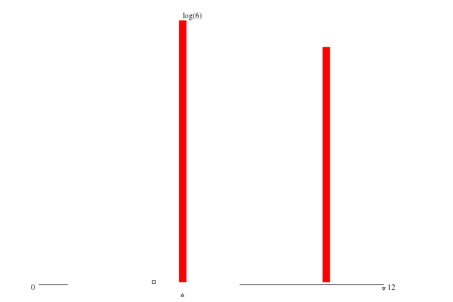

|  | ||
| maxs | mins | |
|
(1.summ) 12 |
(11.sum) 1 |
|
|
(10.sum) 7 |
(9.summ) 1 |
|
|
(8.summ) 7 |
(7.summ) 1 |
|
|
(4.summ) 7 |
(5.summ) 1 |
|
|
(2.summ) 7 |
(3.summ) 1 |
| memory (MB) | mode ▵ | μ ▫ | (μ+σ)/μ | 1st alloc. max value | 1st alloc. max through ▿ | 1st alloc. min waste |
| -- 5.243 xE6 |
-- 4.194 xE6 |
-- 1.866 |
throu: 1.000 waste: 37.34%
alloc: 12.583 xE6 |
throu: 1.000 waste: 37.34%
alloc: 12.583 xE6 |
throu: 1.000 waste: 37.34%
alloc: 12.583 xE6 |